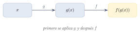

Capítulo 17
Álgebra de funciones
UNAM IPN
A partir de dos funciones pueden construirse nuevas funciones mediante la suma, la resta, la multiplicación, la división y la composición. Al realizar estas operaciones no solo deben combinarse correctamente las reglas de correspondencia, sino que también debe determinarse el dominio de la función resultante. En este capítulo estudiarás cada operación y aprenderás a conservar las restricciones de las funciones originales.
17.1 Suma y resta de funciones#
Sean \(f\) y \(g\) dos funciones. Su suma y su diferencia se definen mediante:
Ambas operaciones están definidas en los valores de \(x\) que pertenecen simultáneamente a los dominios de \(f\) y \(g\). Por tanto:
y
Sean:
y
Calcula \(f+g\).
Ver solución
Sumamos las reglas de correspondencia:
Como ambas funciones son polinómicas, sus dominios son \(\R\). Por tanto:
Con las funciones:
y
calcula \(f-g\).
Ver solución
Restamos la regla de \(g\) de la regla de \(f\):
El dominio es:
Al restar funciones, el signo negativo afecta a todos los términos de la segunda función.
Por ejemplo:
debe escribirse como:
no como \(x^2+3x+5x+7\).
17.2 Multiplicación de funciones#
Sean \(f\) y \(g\) dos funciones. Su producto se define mediante:
También puede escribirse:
El dominio del producto es la intersección de los dominios de las funciones originales:
Sean:
y
Calcula \(f\cdot g\) y determina su dominio.
Ver solución
La función \(f\) es polinómica, por lo que:
En la función \(g\), el denominador debe ser distinto de cero:
Por tanto:
y:
Multiplicamos las funciones:
Factorizamos la diferencia de cuadrados:
Entonces:
Aunque la expresión simplificada es \(x-2\), el valor \(x=-2\) continúa excluido porque no pertenecía al dominio de \(g\).
Por tanto:
Simplificar la regla de correspondencia no modifica el dominio original de la operación.
En el ejemplo anterior:
pero únicamente cuando:
La gráfica del producto coincide con la recta \(y=x-2\), excepto que presenta un hueco en el punto correspondiente a \(x=-2\).
17.3 División de funciones#
Sean \(f\) y \(g\) dos funciones. El cociente de \(f\) entre \(g\) se define mediante:
Su dominio contiene los valores que pertenecen a los dominios de ambas funciones, excepto aquellos para los que el divisor vale cero:
Sean:
y
Calcula \(\frac{f}{g}\) y determina su dominio.
Ver solución
Formamos el cociente:
Las funciones \(f\) y \(g\) están definidas para todo número real. Sin embargo, el divisor no puede ser cero:
Por tanto:
En el cociente de funciones deben revisarse dos tipos de restricciones:
- las restricciones propias de los dominios de \(f\) y \(g\);
- los valores para los que \(g(x)=0\).
La segunda restricción es necesaria porque dividir entre cero no está definido.
17.4 Composición de funciones#
Sean \(f\) y \(g\) dos funciones. La composición de \(f\) con \(g\) se define mediante:
Se lee “\(f\) compuesta con \(g\)”.
En esta operación se aplica primero la función \(g\) a la entrada \(x\). Después se aplica la función \(f\) al resultado obtenido.
El orden de la composición puede representarse mediante el siguiente diagrama:

El dominio de la composición \(f\circ g\) está formado por los valores \(x\) que cumplen simultáneamente:
- \(x\) pertenece al dominio de \(g\);
- \(g(x)\) pertenece al dominio de \(f\).
En símbolos:
La composición no es conmutativa. En general:
Cambiar el orden de las funciones suele cambiar tanto la regla de correspondencia como el dominio.
Sean:
y
Calcula \(f\circ g\) y \(g\circ f\).
Ver solución
Para calcular \(f\circ g\), sustituimos \(g(x)\) en la regla de \(f\):
Para calcular \(g\circ f\), sustituimos \(f(x)\) en la regla de \(g\):
Por tanto:
Como ambas funciones están definidas en \(\R\), los dominios de ambas composiciones son:
Sean:
y
Calcula \(f\circ g\) y determina su dominio.
Ver solución
Primero consideramos el dominio de la función interior:
Por tanto:
Además, la salida de \(g\) debe pertenecer al dominio de \(f\). Como el denominador de \(f\) se anula cuando su entrada es \(1\), se requiere:
Entonces:
Ahora calculamos la composición:
Multiplicamos el numerador y el denominador por \(x\):
Por tanto:
con dominio:
La expresión simplificada:
solo muestra directamente la restricción \(x\neq 1\). Sin embargo, el valor \(x=0\) también debe excluirse porque la función interior:
no está definida en \(x=0\).
Al componer funciones, las restricciones deben determinarse a partir de las funciones originales, no únicamente de la expresión final.
Sean:
y
Calcula \(f\circ g\) y \(g\circ f\).
Ver solución
Para \(f\circ g\):
Para \(g\circ f\):
Nuevamente:
Para calcular una composición debe sustituirse cada aparición de la variable de la función exterior por la función interior.
Si:
y:
entonces:
no:
17.5 Composición con funciones radicales#
El dominio de una composición puede requerir resolver una desigualdad después de sustituir la función interior.
Sean:
y
Calcula \(f\circ g\) y determina su dominio.
Ver solución
Sustituimos \(g(x)\) en la regla de \(f\):
Para que la raíz cuadrada esté definida en los números reales, debe cumplirse:
Por tanto:
Con las mismas funciones:
calcula \(g\circ f\) y determina su dominio.
Ver solución
Sustituimos \(f(x)\) en la regla de \(g\):
La restricción proviene de la función interior \(f(x)=\sqrt{x}\):
Por tanto:
Este ejemplo muestra que cambiar el orden de la composición también puede cambiar el dominio.
17.6 Evaluación de operaciones entre funciones#
En ocasiones no se solicita determinar toda la regla de una operación, sino evaluar directamente una combinación de valores funcionales.
Si:
calcula:
Ver solución
Sustituimos los valores conocidos:
17.7 Resumen de dominios#
Al realizar operaciones entre funciones, el dominio se determina de la siguiente manera:
- Suma \[D_{f+g}=D_f\cap D_g.\]
- Resta \[D_{f-g}=D_f\cap D_g.\]
- Producto \[D_{fg}=D_f\cap D_g.\]
- Cociente \[D_{f/g} = \{x\in D_f\cap D_g:g(x)\neq 0\}.\]
- Composición \[D_{f\circ g} = \{x\in D_g:g(x)\in D_f\}.\]
Para determinar correctamente el dominio de una función obtenida mediante operaciones, conviene establecer primero las restricciones de las funciones originales y simplificar la expresión después.
Una simplificación algebraica puede ocultar una restricción, pero no puede incorporar al dominio un valor que originalmente estaba excluido.
17.8 Ejercicios propuestos#
Sean:
y
Calcula \(f+g\).
Ver solución
Sean:
y
Calcula \(f-g\).
Ver solución
Sean:
y
Calcula \(f\cdot g\) y determina su dominio.
Ver solución
\[(f \cdot g)(x) = \sqrt{1 - x} \cdot \sqrt{1 + x} = \sqrt{(1 - x)(1 + x)} = \sqrt{1 - x^2}.\] Dominio: \([-1, 1]\).
Sean:
y
Calcula:
y determina su dominio.
Ver solución
\[\left(\frac{f}{g}\right)(x) = \frac{x + 5}{x - 2}.\] Dominio: \(\R - \{2\}\).
Sean:
y
Calcula \(f\circ g\).
Ver solución
Sean:
y
Calcula \(f\circ g\) y \(g\circ f\).
Ver solución
\[(f \circ g)(x) = f(x + 3) = 2(x + 3) = 2x + 6.\] \[(g \circ f)(x) = g(2x) = 2x + 3.\]
Si:
calcula:
Ver solución
Sean:
y
Calcula:
y determina su dominio.
Ver solución
\[\left(\frac{g}{f}\right)(x) = \frac{x^2 - 2x}{x} = x - 2.\] Dominio: \(\R - \{0\}\).
Sean:
y
Calcula \(f\circ g\) y \(g\circ f\).
Ver solución
\[(f \circ g)(x) = f(x^2) = x^2 + 2.\] \[(g \circ f)(x) = g(x + 2) = (x + 2)^2 = x^2 + 4x + 4.\]